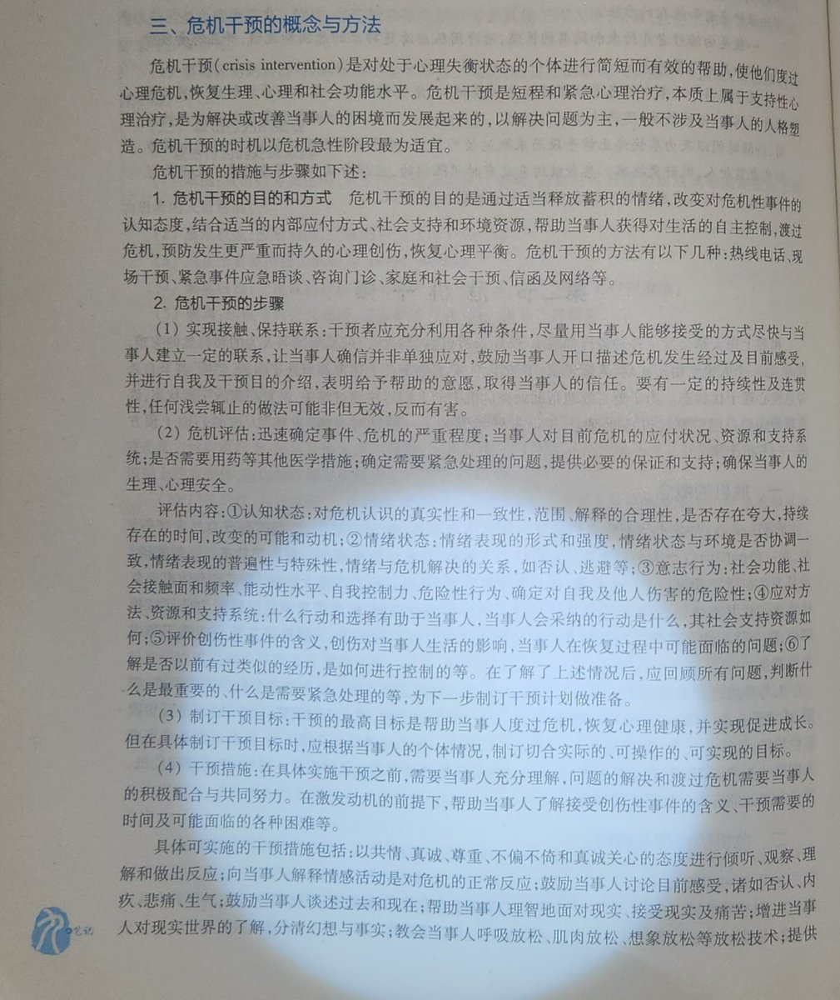
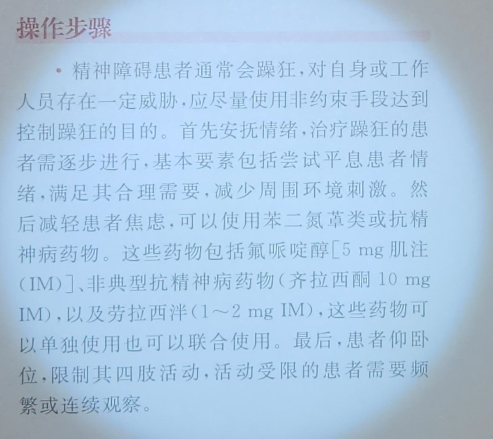

𝘠𝘶𝘮𝘦𝘬𝘢 ✨🐰
@YMKxxxxxxxx
@Strf_9040C 毫无共情能力，在逻辑崩坏中自以为是的运作


STRIDSFORDON 9040C
@Strf_9040C
教材要求平息患者情绪，减少周围环境刺激。而他直接甩出一句“已举报”，这不仅不是安抚，反而是最强烈的负面刺激。在一个人最脆弱的时候，官方警告式的语言会瞬间引爆对方的恐惧和孤立感
那句回复里看不到一丁点人性。没有真诚的交流，只有施压（举报）。这种高高在上的傲慢姿态，是对当事人人格的无视 https://t.co/Q8kQSwdFRy https://t.co/4H1ETQ4pxT